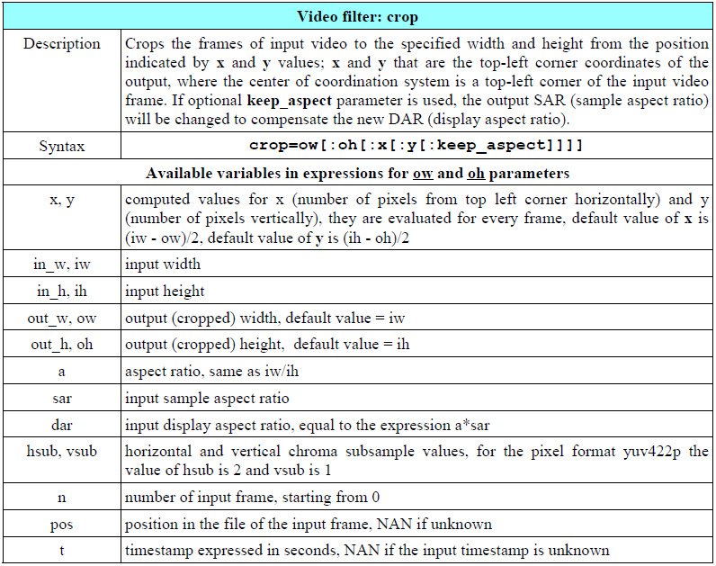
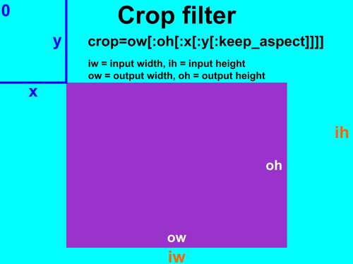
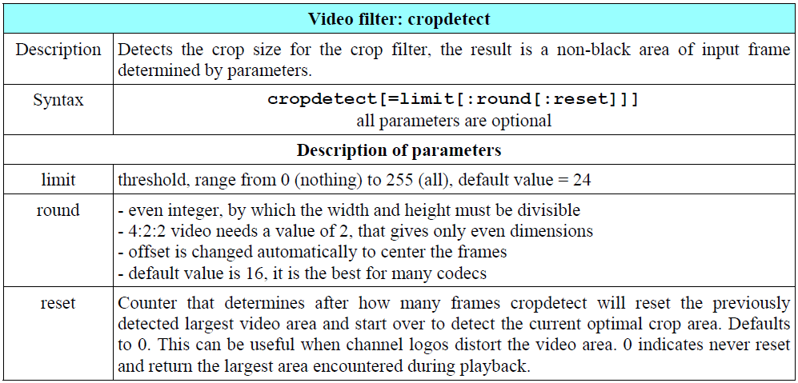

视频裁剪就是选中你想要的矩形区域并只输出这个区域，去污不残留。裁剪通常和大小调整，填充和其他操作一起使用。
基本裁切内容
老版本的FFmpeg有cropbottom、cropleft、cropright、croptop几个指令，但是现在过时了。裁剪操作现在使用下表描述的crop滤镜。

ow的值能够通过oh的值推导得出，反之亦然。但是不能通过x和y推导得出，因为它们是在ow和oh之后进行求值的。另外x能够通过y推导得出，反之亦然。
好懵逼。先看人家举的栗子：1
2
3ffmpeg -i input -vf crop=iw/3:ih:0:0 output
ffmpeg -i input -vf crop=iw/3:ih:iw/3:0 output
ffmpeg -i input -vf crop=iw/3:ih:iw/3*2:0 output
结果还是没明白人家什么意思。再看个图：

中心裁剪
当我们进行中心裁剪操作时，可以跳过crop滤镜x和y参数的输入。默认x和y的值分别是：x_default = ( input width - output width)/2，y_default = ( input height - output height)/2
这意味着中心裁剪时默认值是自动设置的。那么裁剪中心区域的语法是：ffmpeg -i input_file -vf crop=w:h output_file
例如ffmpeg -i input.mpg -vf crop=iw/2:ih/2 output.mp4表示以中心裁剪的方式裁出宽高为原视频一半的视频。
裁剪区域的自动检测
这个功能很牛逼啊，它表示能够通过cropdetect滤镜监测没有黑边的区域并进行裁切。参数描述见下表：

黑边通常出现在分辨率转换之后，如4：3<--->16：9。
限制参数指定在输出时选中了多少黑色，参数0表示只有纯黑色会被裁剪。比如我们可以使用ffmpeg -i input.mp4 -vf cropdetect=limit=0 output.mp4命令裁切没有黑色的输出。
裁切计时器
媒体播放器通常拥有一个进度条来展示播放时间，但是通常只有在鼠标划过时经过一个特殊的时间短展示或消失。
ffmpeg内置了一个名为testsrc的视频，我们可以通过ffplay -f lavfi -i testsrc命令来播放它。他的默认大小为320x240像素，初始计时器的数字0大小为29x52像素，且他的位置距左上角在水平方向的距离为256像素，竖直方向上的距离为94像素。我们可以通过ffmpeg -f lavfi -i testsrc -vf crop=29:52:256:94 -t 10 timer1.mpg命令来裁切一位数字。
那么同理，我们要裁切更多位数的话，可以根据单个数字的宽高适当调节参数，例如要裁切一个三位数的计时器：ffmpeg -f lavfi -i testsrc -vf crop=93:52:192:94 -t 1000 timer1.mpg。
如果想要裁切出的数字比52px更高，我们可以指定一个testsrc更大的输出尺寸(如：-i testsrc=size=vga)并且相应的调整裁切区域。
另外可以使用定义在Color Corrections章节中的lut滤镜来调整数字的颜色和背景色。创建出来的计时器会用于示例中的视频遮盖（Created timers will be used in examples for the video overlay.这句没明白是怎么个应用法）。